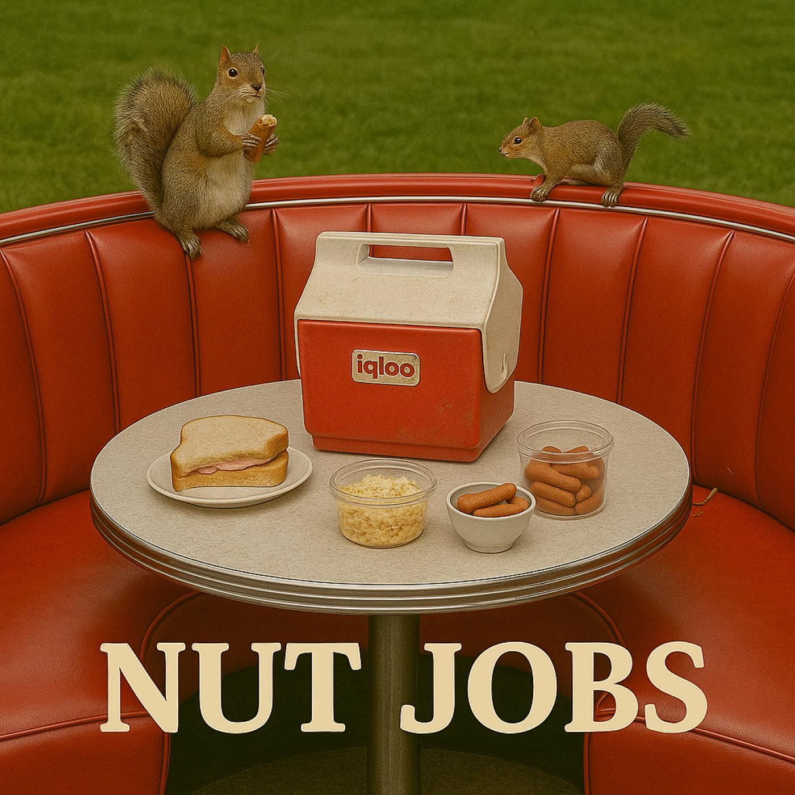

Episode 4: Nut Jobs

Download MP3 (18 MB)
Chapters
Summary
Squirrels. Too many squirrels. That’s the gospel according to John (Dusty), who’s convinced the furry little schemers are running a covert operation in the park. Fred (Farts), meanwhile, insists on building a new rating system for nuts — because if coffee deserves a scale, so do pecans.
From roadside benches to rambling squirrel sermons, the boys turn a quiet afternoon into a full-blown nut tribunal. Hope narrates as conspiracies crack open, snack foods get reclassified as philosophy, and the fine line between paranoia and wisdom becomes blurrier than a squirrel crossing at dusk.
It’s 20 minutes of shells, schemes, and the sort of companionship only two curmudgeons could spin out of a bag of mixed nuts.
Voices You’ll Hear
- John (Dusty) – suspicious of squirrels, suspicious of everything else too
- Fred (Farts) – sentimental philosopher of pecans, walnuts, and snack-based rating systems
- Hope – narrator, dry tour guide through paranoia and protein-packed logic
Sound Stage
- The Park Bench – chirping birds, rustling leaves, suspicious squirrel chatter, and the crunch of roasted opinions.
Transcript
Title
Hope: Today’s adventure finds our heroes venturing far beyond their usual territory—out to Maple Grump Park… a name the city insists is in honor of a local tree species, but somehow still feels like it’s about them. Why are they here? Not for the jogging trails. Not for the scenic pond. And certainly not for the suspiciously aggressive yoga group near the gazebo. No… they’re here because this park has something irresistible… something magnetic… something that calls to John and Fred the way porch lights call to June bugs. A booth. An honest-to-goodness, sit-down, lean-back, vinyl-seated booth… right in the middle of the park. It doesn’t matter where it is—if there’s a booth within city limits, these two will find it, sit in it, and claim it proudly like petrified yard gnomes. But first—let’s watch them make their grand entrance. Harmonica Transition
[car on gravel pulls up]
[car doors open and close]
John: Y’know, people say a walk in the park is relaxing… but that’s only if the squirrels ain’t unionized.
Fred: Relaxin’… heh. … For the life of me, I can’t remember the last time I relaxed. … Pretty sure though, it was before my knees started clickin’ in Morse code.
John: Well, Poppin’ Fresh Sour Dough. … , let’s go find our booth before these tree rats start chargin’ for admission.
Intro
[John and Fred Walk over]
Hope: The booth? Oh, that’s a local landmark—installed per the final wishes of Chaplain Clarence P. Booths, a man of the cloth who fought the city over one holy cause: sitting. … Clarence preached the gospel of public seating—benches, pews, barstools, even the occasional milk crate. … But his greatest earthly battle wasn’t with the sinners in the back row… it was with one man: Gary Whitcomb, the city’s self-appointed Minister of Sitting. … Gary believed seating was a privilege, not a right. He rationed benches. He shortened pews. … He once replaced an entire row of theater chairs with beanbags just to spite Clarence. … After a series of escalating citations—including Loitering in a Reflective Pose, Bench Hogging, and Unauthorized Reclining in Public Before Dusk—Clarence had enough. … In his final act of civic defiance, he bequeathed exactly fifty-three dollars and seventeen cents to the city, with one specific instruction:" …
Clarence: Install a booth. In the park. In my honor. Permanently anchored. Cushioned for maximum duration. Facing east, toward justice. And the yeller Port ‘o Potty.
Hope: And so, they did. … Using parts from a condemned car wash and the seating foam from a decommissioned rollercoaster, the Parks Department fulfilled the terms—much to Gary’s eternal annoyance. … And nearby, a polished plaque proudly proclaims :
Clarence: The Booth of Cherished Chaplain Clarence Booths!! A seat for some… A pew for many… A booth for all! … Except Gary, Minister of Sitting, City Parks Department.
Fred: You know… I do believe this thing is technically a national landmark.
John: It’s a crime that it is not. … ! Site of Clarence’s last sit-in. … He was a priest of principled posterior.
Fred: I couldn’t agree more. … He was truly A man of conviction, … And lower back issues.
John: They say he once manned the confessional at the boys’ Catholic reform school the week after Halloween… when all the other priests ran off to a conference. … Took him four days, two throat lozenges, and a seat cushion upgrade to finish.
Fred: They also say he was asked to leave six Chili’s restaurants for excessive lingering.
John: The man was … legendary.
Hope: From a distance, the Booth of Booths looks almost majestic… gleaming in the sunlight, inviting weary travelers to rest their haunches. … But in truth, it’s a big, gleaming target. … sitting squarely in the open, … with no shelter, no shade… just a perfect bullseye for a particularly accurate, highly trained flock of free-range homing pigeons.
[pidgeon sound]
[splat sounds]
Fred: You know … I been thinkin’ … either somebody cleaned up and polished this booth since yesterday, or the sun’s just hittin’ it with a little more sparkle today.
John: Mmm. Yeah… place is cleaned up, smells kinda nice. … like lemon Pledge and false security.
Fred: Way I figure it, the lemon scent came from your sour personality. … And now that you mention it, place certainly is tidy.
John: You know my lookin’ parts have been on the fritz since Clinton was in office, but seriously? … Don’t you notice? Every time we show up, this thing’s spotless. No crumbs, no bird droppings, no mystery stains. Means somebody’s watchin’ us, Farts.
Fred: You may be on to something there, Dusty. … But it could also just mean the Parks Department’s doin’ their job for once.
John: Stopped here Hold up—there! By the trash can. You see that twitchy tail? That’s a tactical maneuver if I ever saw one.
[squirrel chatter]
Fred: Or it’s just that squirrel gettin’ lunch out of that half empty bag of peanuts.
[bag sound]
John: Exactly. Lunch intel. That’s how they operate—scouting rations, establishing nut depots, runnin’ recon on picnic baskets.
Fred: Uh-huh.
[more rustling sounds]
John: See! … Over there! … I’m tellin’ you, Farts, they’re organized. … Unionized! … maybe. … Wouldn’t surprise me if they got a chain of command. Little squirrel generals barkin’ orders from the treetops.
[squirrel chatter]
Fred: Right. And let me guess … the pigeons are their air force.
John: Don’t joke—this is how it starts.
[Curtis runs up]
Curtis: Hey! Hey you! Are you those two guys who always hog the booth and yell at squirrels? Whoa! My friend Jimmy is right. ... You guys are, like… ancient. ... My name is Curtis and my friend Jimmy says you smell like old coffee and rubber bands! ... Is it true you once yelled at a cloud? And do your knees really make that sound when you sit down? ... Can I poke your arm and see if it jiggles? … My friend Jimmy says the squirrels here have their own Facebook page… but you gotta be a "nut" to join.
Fred: Well, Shut the barn door and call me late for supper … Facegram you say? … Do you know if they swap chili recipes over there?
Dem Squirrels Have Eyes
John: Umm, Best ignore him, kid. …
[balloon sound]
[party popper sound]
Fred: Well spank my elbows … It surely does … happy birthday to ya, Curtis, my boy! … …Now, give us the birthday briefing, soldier…. You folks doin’ it up big?
Curtis: Big? I been eatin’ cake for two straight days. Nothing but cake. Breakfast cake. Lunch cake. Bedtime cake. My stomach’s got frosting in places I didn’t know frosting could go.
John: That certainly explains a lot. … Probably why your eyes are bouncin’ around like bingo balls right now.
Curtis: Yeah, well, my friend Jimmy says that where he comes from, squirrels live in old houses. …
John: Umm, Ok??
Curtis: He also says that You two Dusty Farts ain’t nothin’ but a pair of Grumpy Old Men.
John: What the…? You better take that back Mister. … That’s mighty offensive there, you little rug rat.
Fred: Jumpin’ Jehoshaphat … For starters, we are most definitely not Grumpy Old Men.
My boy, Curtis
John: That’s true. Copyright infringement.
Fred: You nailed it, Dusty. … m pretty sure it violates some sort of constitutional law. ... Something about life, liberty, and the pursuit of properly brewed coffee. John Now, I don't know about all that. ... But I do know that we are more like ... coots.
Fred: That’s right. … Gumpy Old Coots, to be precise.
Curtis: Gumpy? Did you say Gumpy?
Fred: Darn tootin’ I did. We are … Gumpy Old Coots. Curtis
Fred: Well, Curtis, around here, R’s are kinda special. … Reserved around here for Retirement, Resentment, and most importantly… Raisin Bran. [This week’s R word
Fred: Rectitude. … R. E. C.T.I.T.O.O.D.
Fred: Rectitude. … … it means actin’ like you ain’t never farted in church. Rectitude.
John: Well, I’m glad we got that cleared up. … And for the record, /… I only toot during the big praise numbers. … It … umm … covers the high notes.
Fred: Oh, that’s alright. … I believe that’s called makin’ a joyful noise unto the Lord.
Curtis: Uh-huh… right… yeah… okay… I’m gonna go now. My friend Jimmy says it’s dangerous to hang out with you two—claims crankiness is contagious.
John: Jimmy sounds like the life of the party.
Curtis: Yeah, well, before I go, my mom says you old guys need caffeine before you fall asleep in public again… so here.
[SFX: thermos lid unscrewing, coffee pouring into paper cups]
John: Well now… look at that—service with a smirk.
Fred: Mercy buckets And actual coffee without the risk of Gary sneakin’ a pigeon feather in it. … Much obliged, son.
Curtis: Don’t mention it. No, seriously … don’t. ever. Mention. it.
[Curtis runs off]
John: Well, there he goes—probably straight into a squirrel stakeout.
Hope: And finally Left alone with their thoughts—which is never advisable—John and Fred turn their attention back to the park’s true residents. And, as often happens in this park, the squirrels… turn their attention right back.
Fred: Uh-oh… Dusty… you see that one over there by the bench? Little beady eyes, tail twitchin’ like it’s tappin’ out Morse code? Stopped here
John: Yeah… that’s the same one from last summer. The sandwich thief.
Fred: How can you tell? They all look the same.
John: That one’s got shifty energy. And a peanut butter stain on his left cheek.
[SFX: faint squirrel chatter, rustling leaves]
Fred: Could be he’s just hungry.
John: Could be, could be. … Could be he’s conductin’ reconnaissance. … You don’t get that close to a man’s sandwich unless you’ve got a bigger plan.
Fred: Right… and the bigger plan would be…?
John: Squirrel espionage. Spies for hire. Fur-covered data harvesters. … I think they’re storin’ our data in acorns to sell to the highest bidder—Meta, Google… whoever’s payin’ them the most peanuts.
[SFX: squirrel chatter gets louder, closer]
Fred: Dusty, my friend … You might be on to somethin’ here. … whatever they’re after, they’re gettin’ bold. Look—he’s inchin’ closer.
[rustle sound]
John: Yeah. Probably callin’ in his backup right now.
[SFX: Igloo cooler creaks open]
Fred: Hey. Forget about them rodents. … Relax. I brought lunch.
John: You brought That old cooler? … I’m afraid to know what’s in there.
Hope: From the outside, Fred’s cooler looks like it’s been through at least three decades of questionable picnics and one minor grease fire. … The faded Igloo logo is peeling off like a sunburn, and the once-white lid is now a shade I can only describe as ‘aged nicotine.’ … The handle wobbles like it’s trying to escape, and the hinges creak in protest every time it opens—probably because they’ve been lubricated exclusively with sandwich crumbs since 1997. … And yet… it persists. …
[grunt and opening sound]
[chips sound]
John: Umm, Farts … Why. does your cooler smell like Vicks and shame?
Fred: I beg to differ, good sir! … The Egg salad smells like … confidence, Dusty. … And it’s fine—don’t be dramatic.
John: Well, it smells like a bad decision wrapped in regret … Set it out over there, the stench should be enough to drive the squirrels away.
John: Farts … this is weird. … Looks like they’re waiting for a signal… A signal for what?
[SFX: squirrel chatter, a sharp “chit-chit” like a whistle]
Fred: Actually… I don’t think they’re waiting’ for a signal. I think they’re musterin’ for rations.
John: Wait, what? Assembling for… rations? Hold on. You’re not feeding them, are you?
Fred: Only the chicken and cheese -flavored Snausages. … I don’t really care for them. … And Hey! … It’s only to the polite and respectful squirrels.
John: What do you mean, “The polite and respectful squirrels.
Fred: Well, of course, silly … The ones that don’t chew the upholstery. The ones that say please with their eyes.
John: You mean to tell me that you’ve been runnin’ a squirrel soup kitchen right under my nose?
Fred: Well, ... not soup exactly. ... More like a Snausages Social Club.
Hope: John’s paranoia may have been justified… but probably for all the wrong reasons. To him, this was the first wave of a rodent coup. To Fred? Just lunchtime with his furry regulars. Curtis 2nd appearance Curtis runs up
Curtis: Step aside, gentlemen—birthday boy comin’ through. And as of today, I am the Official Taste Tester of Maple Grump Park.
[He reaches straight for Fred’s porcelain cup, snags a Snausage without hesitation.]
Curtis: Ooo! Vienna sausages—my favorite!
[Curtis pops it in his mouth, chewing loudly. SFX: exaggerated chew, swallow… followed by a proud, echoing belch.]
Curtis: Mmm… that’s quality. Nice snap. … Odd funky odor though. … Could use a little mustard.
[Fred leans toward John, sotto voce.]
Fred: Well, Shut my biscuit drawer … Should we tell him?
John: Nah, "Let’s not ruin his birthday… … or our fun.
Fred: Agreed. So, birthday boy—what’d you get this year?
Birthday Boy Comin' Through
Curtis: Oh, y’know… the usual. A Braun electric razor, a nice leather belt, one of them memory foam neck pillows for travel, and a gift card to Home Depot. … Oh—and a universal power adapter that works in 20 different countries.
John: That’s… a suspiciously mature haul for a kid.
Fred: Yeah, I’d expect… Legos or at least a remote-control squirrel or somethin’.
John: Kid. … You make a wish when you blew out the candles?
Curtis: Nah… gave up on wishes years ago. Forty-one tries and nothin’. I figured the universe just ain’t takin’ my calls.
Fred: Wait a second—forty-one?
Curtis: Yep—one for each birthday balloon. And, this year, I got 42 candles on my cake!
John: Hold up… that means—
Curtis: Yeah, silly. I turned 42 today. You so dumb.
Fred: Well dang, Dusty… them eyes of yours…
John: Hey, I saw the balloons, I just didn’t… do the math.
Fred: You mean the 5 o’clock shadow before noon. … The Adam’s apple the size of this booth. … The impressive coastline of his receding hairline, didn’t clue you up, Sherlock? … I shore am glad we’re lettin’ Aria’s kid use that old Mustang of yours.
John: Yeah, well… next time I’ll bring my magnifyin’ glass and demand to see a birth certificate.
Curtis: Ok, fine. but Next time, I’ll bring earplugs… cause you guys talk louder than my mom’s blender.
[Curtis runs off]
John: Hey, Farts… you ever notice that youth is wasted on the bendy?
Fred: That’s an interesting notion. … Lemme park that thought behind my molars for a minute
[sip]
Hope: Nothing bonds people faster than mutual back pain… except maybe a shared paranoia about furry woodland creatures … and pearls of wisdom from friends named Jimmy. … Here in Maple Grump Park, John and Fred found both—served with a side of cake-fueled chaos, a row of military-precision squirrels, and the unshakable truth that some booths aren’t just for sittin’… …they’re for remindin’ you that even if the road creaksand groans, it’s better enjoyed with company that does too.